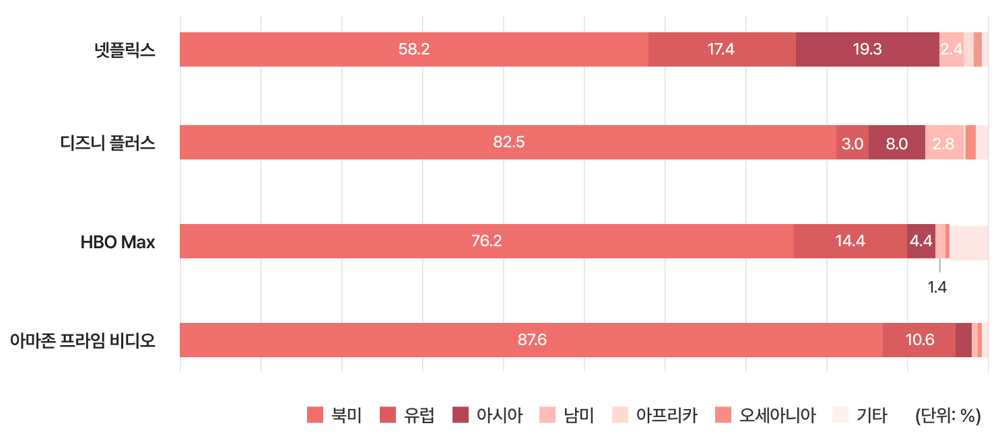
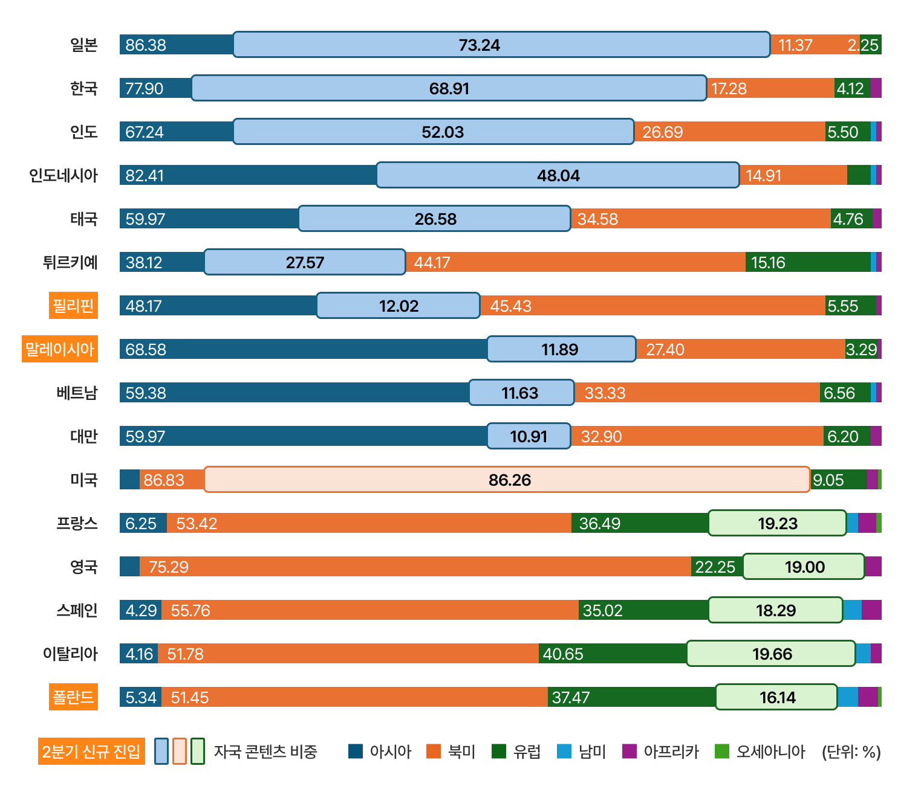
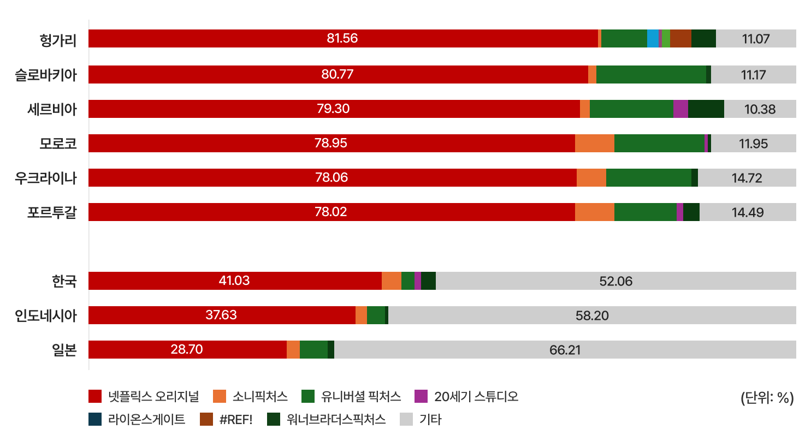
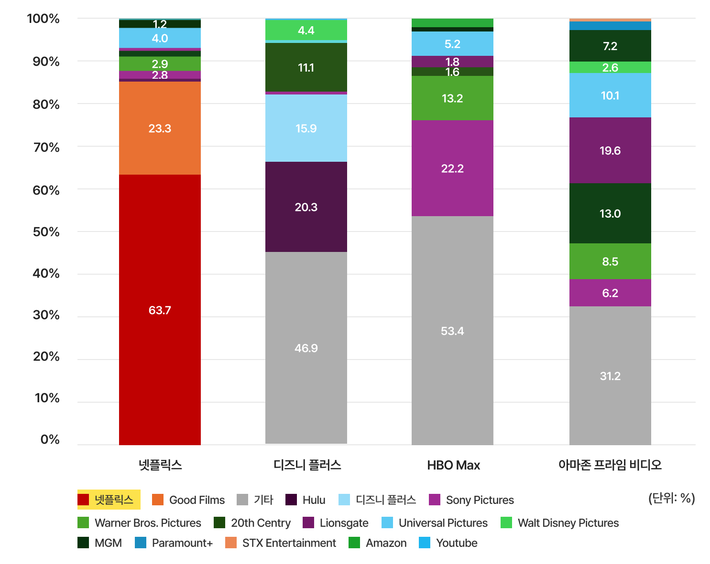

일러두기
⦁
자료 출처: 플릭스패트롤(FlixPatrol, flixpatrol.com)
⦁
자료 수집 시점: 2026년 7월 10일
⦁
분석 기간: 2026년 2분기(2026.4.1.~6.30)
⦁
분석 대상 플랫폼: 넷플릭스(Netflix), 디즈니 플러스(Disney+), HBO Max, 아마존 프라임 비디오(Amazon Prime Video)
⦁
선호도 값(preferences, %) 산출 방식: 분석 기간 동안 각 지역에서 TOP 10에 진입한 모든 콘텐츠를 대상으로 전체 인기점수 중 특정 범주가 차지하는 점수의 합계를 백분율로 환산함
⦁
선호도 값의 해석: % 값이 클수록 해당 지역에서 특정 국가 또는 사업자가 제작한 콘텐츠의 선호가 높음을 의미
⦁
인기 점수(ranking point, 점) 산출 방식: 매일 특정 일, 주, 월, 연도에 대한 계산이 업데이트되며, 인기점수는 각 플랫폼이 국가별로 제공하는 TOP 10 순위를 바탕으로 1위 10점, 2위 9점, 3위 8점… 순으로 포인트를 부여한 후 이를 합쳐서 산출함
⦁
본 분석의 지역, 장르 구분은 플릭스패트롤 분류 기준을 적용함
글로벌 플랫폼 데이터를 제공하는 플릭스패트롤은 각 지역에서 상위 10위에 진입한 콘텐츠를 대상으로 전체 인기점수 중 특정 범주가 차지하는 점수의 합계를 백분율로 환산한 값으로 ‘선호도(preferences)’ 지표를 제공하고 있다. 선호도 지표는 특정 권역의 콘텐츠가 글로벌 시청자들에게 얼마나 인기를 얻고 있는지를 보여주는 간접 지표다. 2026년 2분기 넷플릭스, 디즈니 플러스, HBO Max, 아마존 프라임 비디오의 권역별 콘텐츠 선호도를 살펴본 결과 4개 사업자 모두 북미 지역 콘텐츠에 대한 선호 비중이 가장 높은 것으로 나타났다. 그중에서도 특히 아마존 프라임 비디오와 디즈니 플러스는 북미 콘텐츠 선호 비중이 가장 높은 플랫폼으로 나타났다.
플랫폼별로 보다 구체적으로 권역별 콘텐츠 선호도를 살펴보면, 먼저 넷플릭스는 북미 지역 콘텐츠 선호도가 58.2%로 다른 글로벌 OTT 사업자에 비해 상대적으로 낮은 편으로 나타났다. 이는 지난 1분기와 동일한 수치이기도 하다. 다음으로 아시아가 19.3%(1분기 18.2%), 유럽이 17.4%(1분기 19.3%)로 집계됐다. 즉, 넷플릭스 이용자의 아시아 콘텐츠 선호도는 1분기보다 소폭 상승한 반면, 유럽 콘텐츠 선호도는 다소 감소한 것을 알 수 있다.
디즈니 플러스는 북미 콘텐츠 선호도가 82.5%로 압도적으로 큰 비중을 차지하고 있었으며, 아시아 콘텐츠 선호도는 8.0%로 북미 콘텐츠 다음으로 높게 나타났다. 유럽은 3.0%로 나타나 글로벌 사업자 중 상대적으로 유럽 콘텐츠 선호도가 낮은 편이다.
HBO Max는 북미가 76.2%(1분기 77.9%), 유럽이 14.4%(1분기 14.3%)로 나타나 넷플릭스 다음으로 유럽 콘텐츠 선호가 높았다. 아시아 콘텐츠 선호는 4.4%로 나타났다.
아마존 프라임 비디오는 북미 콘텐츠 선호도가 87.6%로 1분기(81.3%)보다 6.3%p 증가한 것으로 나타났다. 반면에 유럽은 10.6%로 지난 1분기 16.1%보다 5.5%p 감소한 것으로 나타나 다소 변화가 있었다.
전반적으로 2026년 2분기에도 글로벌 OTT 시장에서는 북미 콘텐츠가 여전히 압도적인 우위를 유지한 가운데, 넷플릭스를 중심으로 아시아 콘텐츠 선호도가 점진적으로 확대되는 흐름이 확인됐다.

[그림 1] 2026년 2분기 글로벌 OTT 사업자의 권역별 콘텐츠 선호도
(출처: 플릭스패트롤 홈페이지 자료 재구성(www.flixpatrol.com))
글로벌 OTT 중 점유율이 가장 높은 넷플릭스를 대상으로 2026년 2분기 기준, 국가별 콘텐츠 선호도 가운데 자국 콘텐츠가 차지하는 비중을 분석한 결과 자국 콘텐츠 선호 비중이 10% 이상인 국가는 16개국으로 나타났다. 1분기와 마찬가지로 자국 콘텐츠 선호 비중이 가장 높은 국가는 미국(86.26%)이며, 권역별로는 아시아 국가들의 자국 콘텐츠 선호도가 특히 높게 나타났다. 한편 지난 1분기에 자국 콘텐츠 비중이 10% 미만이었던 필리핀, 말레이시아, 폴란드가 2분기에는 10% 이상 국가 그룹에 새롭게 진입했다.
자국 콘텐츠 비중이 높은 국가를 구체적으로 살펴보면, 먼저 일본은 아시아 지역 중 아시아 콘텐츠 선호가 가장 높으면서 동시에 자국 콘텐츠에 대한 선호 역시 가장 높은 국가다. 2026년 2분기 일본의 아시아 지역 콘텐츠 선호가 86.38%로 가장 높았으며, 그중 73.24%가 자국 콘텐츠였다. 다음으로 북미가 11.37%, 유럽이 2.25% 순으로 나타났으며 그 외 권역 콘텐츠에 대한 선호는 거의 나타나지 않았다. 일본 다음으로 아시아 콘텐츠 선호가 높은 곳은 인도네시아다. 아시아 콘텐츠 선호가 82.41%로 나타났으며, 그중 자국 콘텐츠 선호 비중은 48.04%다. 다음으로 북미가 14.91%, 유럽이 1.95%, 그 외에도 아프리카와 남미 콘텐츠에 대한 선호도 나타났다. 한국은 아시아 콘텐츠 선호도가 세 번째로 높은 국가이며, 자국 콘텐츠 선호 비중은 일본에 이어 두 번째로 높다. 한국 넷플릭스 이용자의 아시아 지역 콘텐츠 선호도는 77.9%였으며, 그중 한국 콘텐츠 선호도는 68.91%다. 그 외에 북미가 17.28%, 유럽이 4.12%, 아프리카가 0.70%로 나타났다. 인도 역시 자국 콘텐츠 선호가 매우 높은 국가다. 인도의 아시아 콘텐츠 선호는 67.24%이며 그중 자국 콘텐츠 선호가 52.03%로 나타났다. 그 외 북미가 26.69%, 유럽 5.50%, 남미 0.33%, 아프리카 0.24% 순으로 나타났다. 한편, 필리핀, 말레이시아, 베트남, 대만 역시 아시아 콘텐츠에 대한 선호가 40~60%대로 높게 나타났다. 하지만 자국 콘텐츠 선호 비중은 10~12% 수준으로 상대적으로 낮게 나타났다.
북미와 유럽은 전반적으로 미국 콘텐츠 선호도가 매우 높게 나타났다. 유럽 국가 중 프랑스, 영국, 스페인, 이탈리아, 폴란드 정도가 자국 콘텐츠에 대한 선호가 16~20%로 높은 편이었는데, 이러한 수치는 아시아 지역과 비교하면 상대적으로 낮은 편이다. 이는 유럽 지역의 미국 콘텐츠에 대한 선호가 기본적으로 높기 때문에 나타나는 현상이라고 할 수 있다.
그 외에 2026년 1분기에는 거의 나타나지 않았던 아프리카 콘텐츠에 대한 선호도가 여러 국가에서 나타난 것도 주목할 만하다. 특히 미국, 프랑스, 스페인, 폴란드에서 2%대의 선호도를 보인 것으로 나타났다.
전반적으로 아시아 국가들은 자국 콘텐츠에 대한 선호가 매우 강한 반면, 유럽 국가들은 미국 콘텐츠 소비 비중이 상대적으로 높게 나타났다. 이는 언어권과 문화적 친숙성이 OTT 콘텐츠 선택에 여전히 중요한 영향을 미치고 있음을 보여준다.

[그림 2] 2026년 2분기 넷플릭스 플랫폼의 국가별 자국 콘텐츠 선호도
* 자국 콘텐츠 선호 비중이 10% 이상인 국가를 정리함
(출처: 플릭스패트롤 홈페이지 자료 재구성(www.flixpatrol.com))
2026년 2분기 기준 넷플릭스 오리지널 콘텐츠 선호도가 가장 높은 국가는 대체로 동유럽 국가들로 나타났다. 헝가리가 81.56%로 가장 높았으며, 슬로바키아가 80.77%로 뒤를 이었다. 그 외에 세르비아 79.30%, 우크라이나 78.06%로 매우 높게 나타났다. 또한 모로코 78.95%, 포르투갈 78.02% 역시 넷플릭스 오리지널 콘텐츠 선호 비중이 매우 높은 국가다.
반면에 일본, 인도네시아, 한국은 글로벌에서 넷플릭스 오리지널 콘텐츠 선호 비중이 가장 낮은 국가다. 이들 국가는 앞서 살펴보았듯이 자국 콘텐츠 선호 비중이 가장 높은 국가이기도 하다. 플릭스패트롤에서 콘텐츠 사업자가 ‘기타’로 분류된 경우 대체로 글로벌 제작사가 아닌 자국 제작사에 해당하는 경우가 많다. ‘기타’ 제작사 비중을 보면, 일본이 66.21%로 가장 높고, 인도네시아가 58.20%, 한국이 52.06% 순으로 나타났다. 이들 3개 국가의 2026년 2분기 상위 10개 콘텐츠 중 넷플릭스 오리지널이 아닌 콘텐츠를 살펴보면 다음과 같다.
⦁
한국: 2026년 2분기 TV쇼 상위 프로그램 중 넷플릭스 오리지널이 아닌 콘텐츠로 2분기에 신규로 10위권에 진입한 JTBC <모두가 자신의 무가치함과 싸우고 있다>가 대표적이다. 그 외에도 2024년에 tvN에서 방영되었던 <선재 업고 튀어>가 이번 2분기에 해당하는 6월에 8위를 기록한 것으로 나타났다.
⦁
인도네시아: 2분기 넷플릭스 차트 상위 콘텐츠 중 넷플릭스 오리지널이 아닌 콘텐츠는 인도네시아 방송사 MDTV와 넷플릭스가 공동 제작한 <Part-Time Wife>, 중국 유쿠(優酷)의 <Ashes to Crown, 교초(翘楚)>가 있으며, 1분기에도 상위에 있었던 인도네시아 지상파 방송사 RCTI와 동시에 방영된 드라마 <테리카트 잔지(Terikat Janji)>가 2분기에도 선전한 것으로 나타났다.
⦁
일본: 1994년부터 2006년까지 후지TV에서 방영되었던 탐정 드라마 <Furuhata Ninzaburo(古畑 任三郎)>와 라이트 노벨 원작의 <That Time I Got Reincarnated as a Slime(転生したらスライムだった件)>, 만화 원작의 <Daemons of the Shadow Realm(黄泉のツガイ)>와 <In the Clear Moonlit Dusk(한국 제목: 아름다운 초저녁달)> 애니메이션이 2분기 상위 10위권을 차지했다.
전반적으로 넷플릭스 오리지널 콘텐츠 선호도가 높은 국가는 상대적으로 자국 콘텐츠 산업 규모가 작거나 미국·유럽 콘텐츠 소비 비중이 높은 국가들인 반면, 한국·일본·인도네시아처럼 자국 콘텐츠 경쟁력이 강한 국가는 넷플릭스 오리지널 의존도가 낮게 나타났다.

[그림 3] 2026년 2분기 주요 국가의 넷플릭스 오리지널 콘텐츠 선호 비중
(출처: 플릭스패트롤 홈페이지 자료 재구성(www.flixpatrol.com))
글로벌 OTT 플랫폼 이용자가 선호한 콘텐츠의 제작사 분포를 살펴보면, 넷플릭스는 자체 오리지널 콘텐츠의 비중이 63.7%로 가장 높게 나타났다. 이는 2026년 1분기 56.3%보다 7.4%p가 상승한 수치다. 디즈니 플러스의 경우 자체 오리지널 콘텐츠 비중은 15.9%, 디즈니(월트디즈니컴퍼니)가 지분 100%를 소유한 훌루(Hulu) 콘텐츠 비중은 20.3%로 나타났다. HBO Max에서는 소니 픽처스(Sony Pictures) 콘텐츠 비중이 22.2%로 가장 높게 나타났고, 아마존 프라임 비디오는 아마존 오리지널 콘텐츠 비중이 8.5%에 그쳐, 선호 콘텐츠 가운데 자체 제작물의 비중이 상대적으로 낮은 것으로 나타났다.
한편 디즈니 플러스, HBO Max, 아마존 프라임 비디오는 모두 ‘기타(Other)’ 사업자 비중이 가장 높게 나타났다. 이는 해당 플랫폼들이 자체 제작 콘텐츠뿐 아니라 외부 스튜디오와 방송사 콘텐츠를 폭넓게 유통하고 있음을 보여준다.
전반적으로 넷플릭스는 자체 오리지널 콘텐츠 중심의 플랫폼 전략이 더욱 강화되고 있는 반면, 디즈니 플러스·HBO Max·아마존 프라임 비디오는 외부 제작사 및 계열 스튜디오 콘텐츠에 대한 의존도가 상대적으로 높은 구조를 유지하고 있음을 알 수 있다.

[그림 4] 2026년 2분기 글로벌 OTT 이용자의 사업자별 콘텐츠 선호도
(출처: 플릭스패트롤 홈페이지 자료 재구성(www.flixpatrol.com))
2026년 2분기 데이터를 통해 글로벌 영상 콘텐츠 소비 문화는 사실상 북미와 아시아 양대 축으로 전개되고 있음을 다시금 확인할 수 있다. 그리고 넷플릭스의 오리지널 콘텐츠 중심 전략은 2026년 2분기에 더욱 견고해지고 있는 것으로 나타났다. 한편 그동안 영상 제작 생태계가 열악했던 동남아시아 국가들의 콘텐츠 경쟁력이 강화되고 있음을 자국 콘텐츠에 대한 높은 선호도를 통해 확인할 수 있었다.